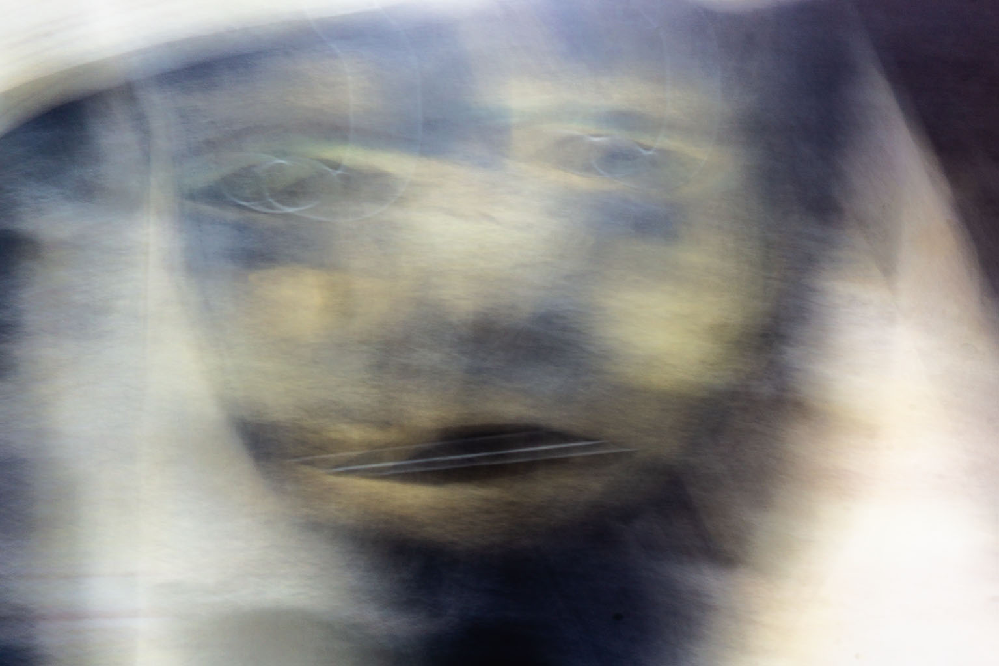
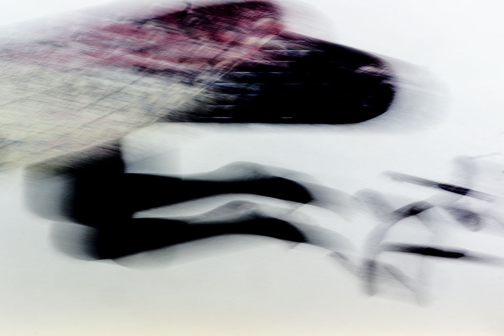
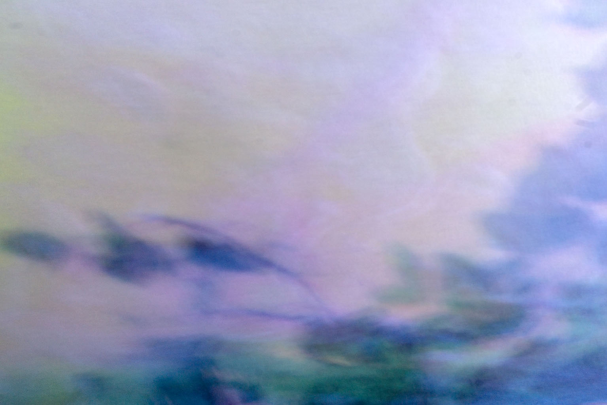
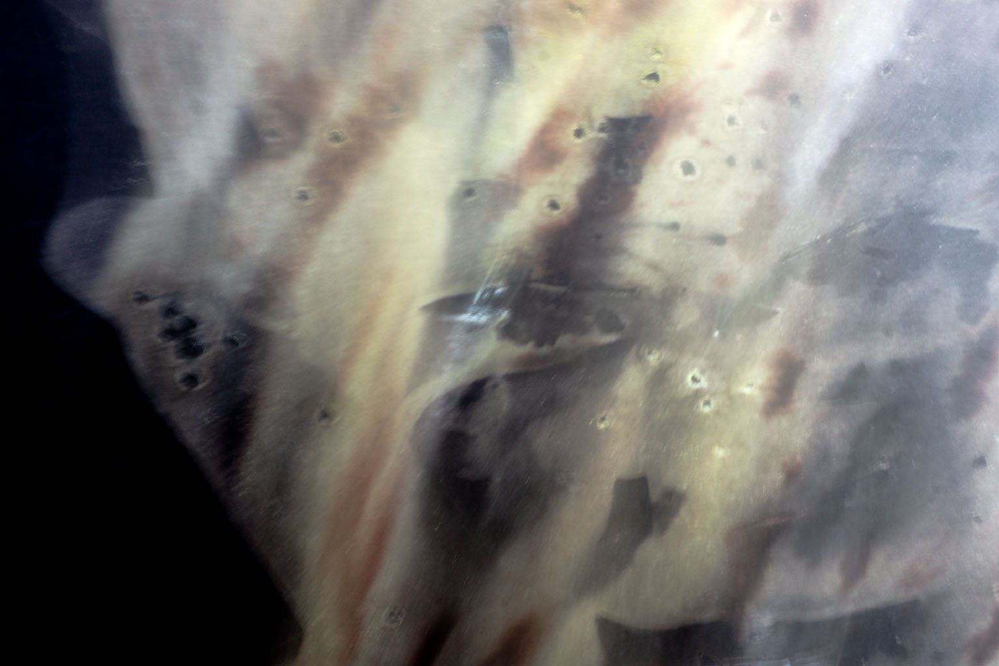
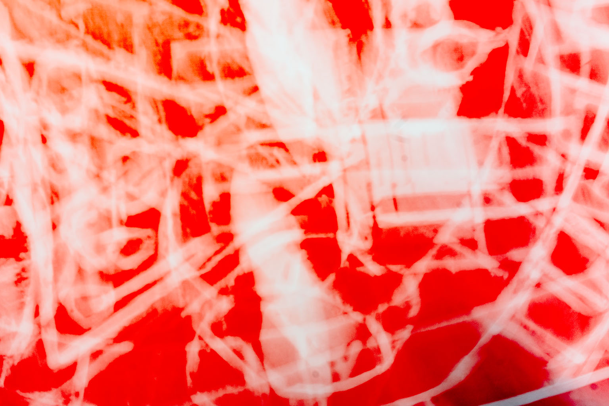
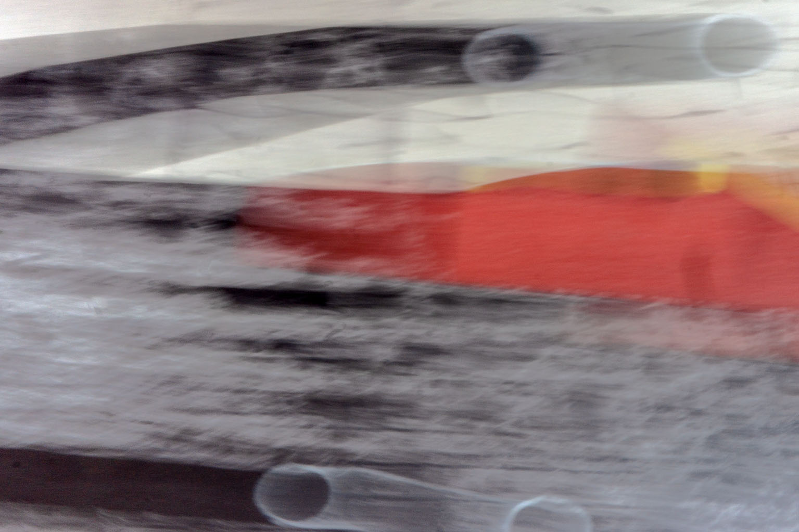
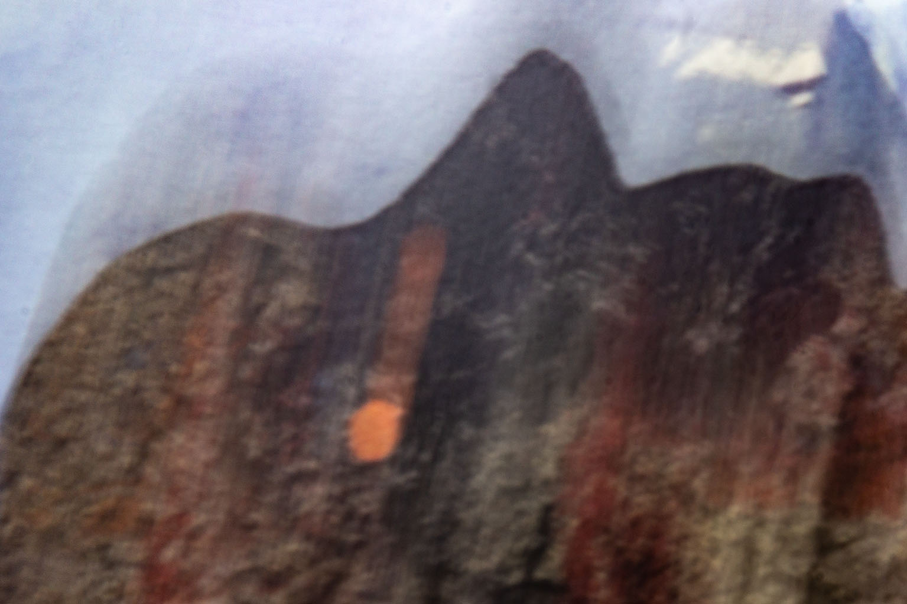
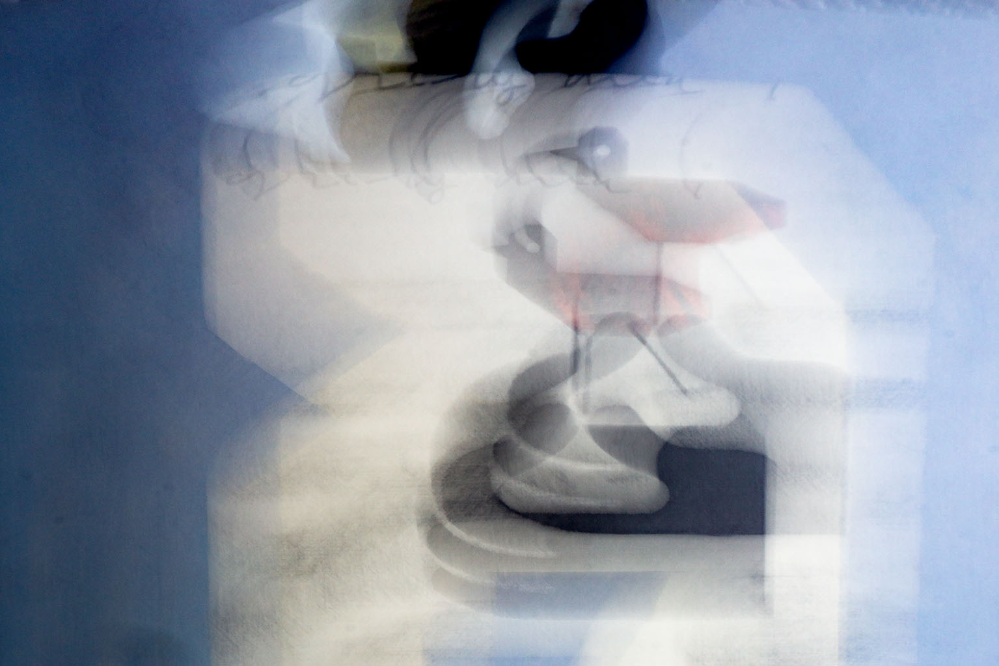

El espacio de los que no han sido bautizados por la luz. Un estado de espera eterna donde la imagen se mantiene en una neblina de baja intensidad.

II. LUJURIA: EL TORBELLINO
Luces que se entrelazan sin descanso, emulando la pasión incesante que arrastra las almas en un ciclo infinito de movimiento y destello.

III. GULA: LA LLUVIA SUCIA
La pesadez de la existencia bajo una luz degradada. La materia visual se vuelve densa, casi táctil, en una sobreexposición deliberada que satura los sentidos.

IV. AVARICIA: GEOMETRÍAS OPUESTAS
Choque de fuerzas que intentan retener la luz. Un ciclo sin fin donde la composición lucha por no desvanecerse en el vacío absoluto.

V. LA IRA Y PEREZA
La luz se vuelve pantano; el odio latente se manifiesta en texturas orgánicas que emergen de la oscuridad urbana, atrapando la mirada errante.

VI. HEREJÍA: EL PENSAMIENTO DESVIADO
Inscripciones de fuego sobre el vacío. La geometría se rebela contra el orden natural, trazando caminos que se desvían de la norma en un rastro de luz persistente.

VII. VIOLENCIA: TRAZOS DE CORTE
Composiciones agresivas donde la luz corta el plano como un cuchillo, dividiendo el espacio en fragmentos de memoria fracturada.

VIII. FRAUDE: LA ARQUITECTURA QUE MIENTE
Puentes de luz que se quiebran. La realidad se desdobla en geometrías imposibles, revelando la fragilidad de nuestra percepción.

IX. TRAICIÓN: EL HIELO DEL COCITO
El frío absoluto. Donde el movimiento se detiene definitivamente y la deriva se cristaliza en una imagen estática, eterna y gélida del alma.
LA GEOMETRÍA DEL SILENCIO
Con la clausura de la novena puerta, Daniel Remeseiro completa un manifiesto sobre la percepción. El recorrido culmina en la parálisis del Cocito, el lago helado donde el movimiento se detiene.